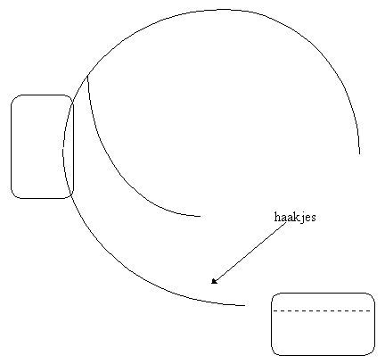

Overzicht MidOrg
Overzicht Actilog
MID TestOrganizer
ActiLog
Draagwijze
Draagwijze
steek het klitteband (met de haakjes) door de gleuf in de ActiLog, zoals aangegeven in de tekening
schuif de ActiLog zover mogelijk door (met het kleine stukje klitteband geopend)
sluit het korte stukje klitteband, waarbij de band al enigszins wordt voorgevormd in de vorm van het been
plaats nu de ActiLog om de enkel, waarbij de volgende regels in acht moet worden genomen
groene punt aan de onderzijde
zo strak mogelijk (zonder ongemakkelijk te zitten
buitenkant van de enkel is comfortabeler, omdat aan de binnenkant de kans op stoten groter is, hetgeen pijnlijk kan zijn.

© Copyright Instrumentele Dienst, 1999
SM, last updated 20-08-2000